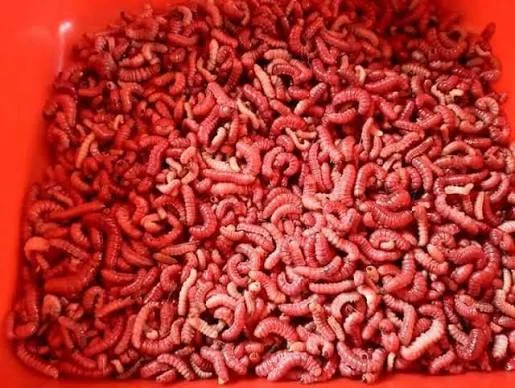

Nombre científico: Comadia redtenbacheri Color: rojo intenso, a diferencia del gusano blanco de maguey Hábitat: viven dentro de las pencas y raíces del maguey (agave) Regiones principales: Hidalgo, Tlaxcala, Puebla, Oaxaca y Estado de México Temporada de recolección: julio y agosto, cuando alcanzan su tamaño óptimo antes de convertirse en mariposas
Se fríen o tuestan, comúnmente con mantequilla, ajo y chile de árbol Ingrediente clásico para rellenar tacos Base de la tradicional sal de gusano (chile + sal), usada para acompañar mezcal Sabor terroso, ligeramente picante; textura crujiente al freírse
Sobre la especie y su ciclo de vida Es una mariposa nocturna de la familia Cossidae. El ciclo completo (huevo → larva → pupa → adulto) puede tardar hasta un año dentro del maguey. La larva perfora galerías dentro de la planta para alimentarse, lo que a veces mata al agave si la infestación es severa —por eso también se le considera una plaga agrícola, aunque su aprovechamiento gastronómico ha ayudado a controlar poblaciones. Su tamaño adulto (como larva) ronda los 5-7 cm de largo. Diferencias con el gusano blanco El chinicuil (rojo) vive más cerca de la raíz; el gusano blanco (Aegiale hesperiaris) suele encontrarse en las pencas más altas. El blanco es más suave y graso; el rojo tiene un sabor más intenso y textura más firme. Uso culinario adicional Se pueden deshidratar y moler para conservarse fuera de temporada, no solo para la sal de gusano. En algunas regiones se cocinan envueltos en hoja de maguey o de plátano, al estilo mixiote. Se combinan también con huitlacoche o flor de calabaza en preparaciones de autor en restaurantes de alta cocina mexicana contemporánea. Antes de cocinarlos, algunos cocineros los "purgan" dejándolos un rato en agua con sal para que suelten impurezas. Dato cultural Junto con los escamoles y los chapulines, forman parte de los ingredientes que en 2010 ayudaron a que la gastronomía mexicana fuera reconocida como Patrimonio Cultural Inmaterial de la Humanidad por la UNESCO.
video relacionado